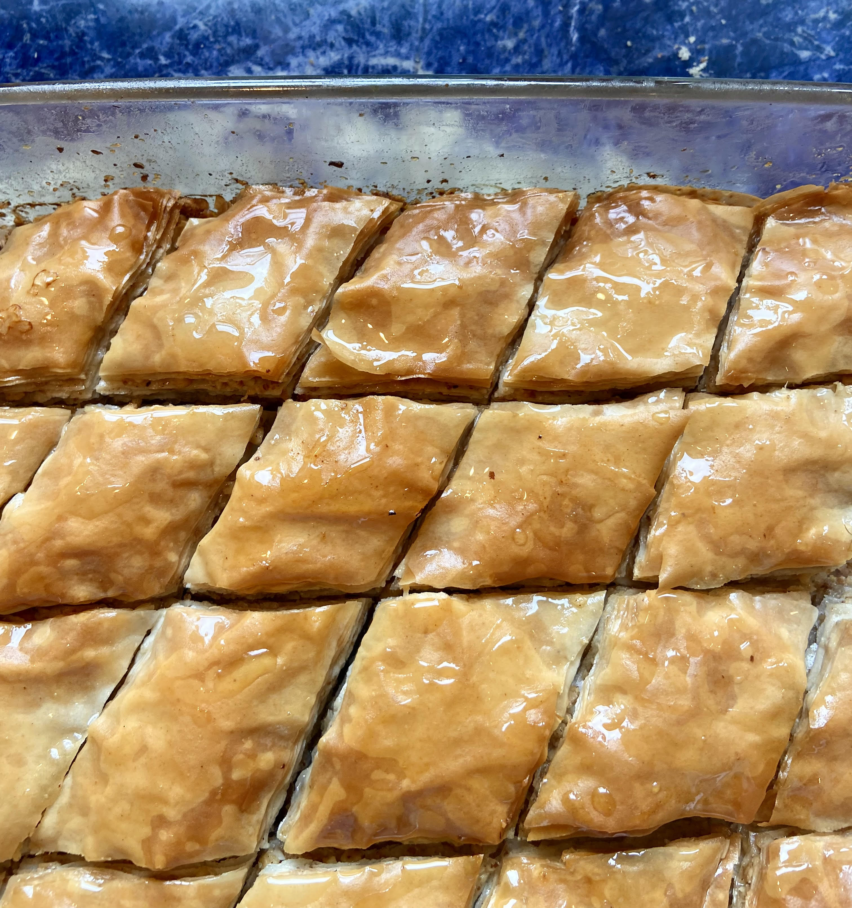

Baklava

Description
Baklava is a traditional pastry made of flaky layers of phyllo dough, filled with crushed nuts and
sweetened with a lightly spiced honey syrup. This dessert is so delicious that it has Greeks and Turks
fighting over its origin. Making baklava isn't difficult, but it does take some time and patience.
Read More
Ingredients
For the dry mixture:
- Phyllo dough (16 oz)
- Butter (1 cup)
- Walnuts (1 lb)
- Dry Spices (measure with your heart)
- Ground cinnamon
- Ground cloves
For the sweet syrup:
- Water (1 cup)
- Lemon juice (1 tbsp)
- Vanilla extract (1 tsp)
- Sugar (1 cup)
- Honey (2 tbsp)
- Orange peel
- Cinnamon stick
Steps
Preparation
- Leave the phyllo dough to defrost in the fridge overnight
and keep at room temperature for 2 hours before using.
- Prepare the syrup. Pour water, lemon juice, vanilla extract,
sugar, honey, orange peel and cinnamon stick into a saucepan.
Let the mixture simmer for 15 minutes. Place the pan in the fridge
to cool completely.
- Chop the walnuts into tiny pieces and place into a container. Mix
with cinnamon powder and ground cloves. Set aside for later use.
- Preheat the oven to 350 degrees F.
Assembly
- Take out a large baking dish and brush the bottom and sides with melted butter.
- To make the bottom layer of the baklava, lay down 8 sheets of phyllo dough into the bottom of the baking dish.
Between every 2 sheets, brush the phyllo dough with butter.
Cover the phyllo dough with a damp paper towel as you work to prevent it from drying out.
- When you have laid down 8 sheets in total, put down a thin layer of the walnut mixture
- Continue this pattern of butter, thin layer of walnuts, 2 sheets of phyllo dough, butter, walnuts, etc.
- The top layer of the baklava can have 6 sheets of phyllo dough, again buttering every 2.
- Use a sharp knife to cut four horizontal lines, and then make diagonal cuts.
- Bake in the oven for about 40 minutes or until golden brown.
- Once your baklava comes out of the oven, pour the cold syrup on top.
- Voila! You have finished your baklava! Enjoy warm or refridgerated. Sticky fingers are unavoidable.
Back to top
Back to homepage